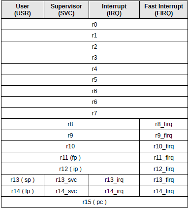
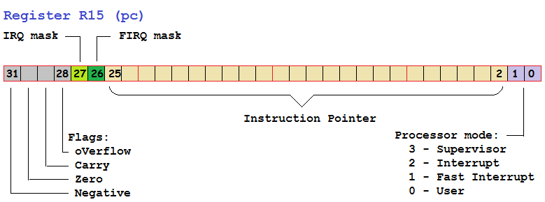
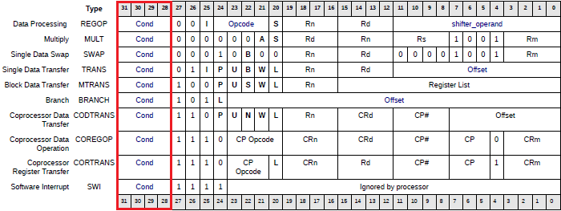
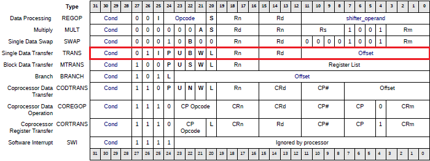
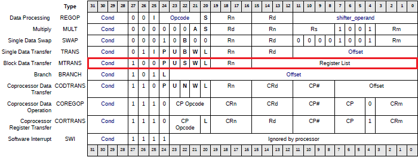
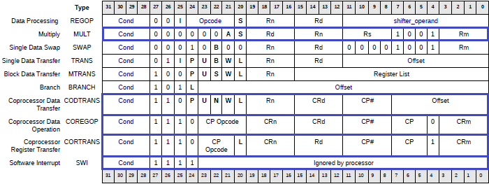

Множество систем на кристалле используют в своей конструкции ARM процессор. Чтобы лучше понять, как он работает нужно разобраться в его системе команд. Скажу честно, понимать ассемблерный код вообще не очень просто. Еще труднее понимать код для ARM процессора – очень много странных суффиксов у команд, существуют разные непонятные значки возле операндов в командах. Понять не очень просто, но стоит однажды разобраться, чтобы потом с легкостью ориентироваться в чужом коде.
Надеюсь эта статья поможет в освоении процессоров семейства ARM. Предполагается что на отладочной плате стоит процессор ARM v2a, реализованный на основе проекта Amber ARM. Несмотря на то, что в системе Amber реализован процессор самой младшей серии ARM v2a, очень многое остается в силе и для более старших моделей процессоров.
* * *
Кому это вообще нужно – разбираться в ассемблере? Ведь сейчас все пишут программы на высокоуровневых языках вроде C++, C#, Java или Python? Ну все, да не все. Если вы разрабатываете систему реального времени и пишите обработчик прерываний, или даже просто пишите драйвер устройства, работающий в режиме ядра операционной системы – вам могут понадобиться знания ассемблера.
Итак, ассемблерный код – это текстовый файл в котором одна строка текста, как правило, описывает одну команду процессора. Компилятор ассемблера преобразует этот текст в бинарный файл в котором команды закодированны специальным образом. Процессор будет читать эти команды из памяти системы и исполнять по очереди. Иногда он может переходить к выполнению команд по другому адресу, выполняя условный или безусловный переход. Внутри процессора есть набор регистров, условно говоря - это временные переменные программы. Процессор может манипулировать значениями в этих регистрах с помощью арифметических, логических команд или команд сдвига. Так же он может загружать в регистры значения из памяти или выгружать в память. Это все довольно общие сведения, которые относятся к ассемблеру для любого процессора. Давайте перейдем конкретно к ARM.
Пример программы и компилятор.
Поскольку мы изучаем систему на кристалле Amber, то вероятно у нас уже есть ее исходные тексты (можно взять на нашей странице в GitHub https://github.com/marsohod4you/Amber-Marsohod2), а значит и исходные тексты некоторых ее программ в папке sw/. Так же, мы уже установили пакет CodeSourcery, который на самом деле является и компилятором C и компилятором ассемблера.
Для экспериментов с ассемблером можно взять любой простой проект вроде sw/hello-world. Внутри этой папки есть файл hello-world.c содержащий функцию main(..) на языке C и файл start.S который и является файлом на языке ассемблера. Собственно программа стартует с выполнения процедуры _start из файла start.S
Откомпилировать программу просто. Наберите в консоли «make» и он сделает все, что нужно. В результате мы получаем несколько файлов, среди которых собственно исполняемый файл hello-world.elf в специальном формате для Linux и файл листинга hello-world.dis. В файле листинга видно по каким адресам теперь расположен какой скомпилированный код:
hello-world.elf: file format elf32-littlearm
Disassembly of section .text:
00000000 <_start>:
0: e3a00000 mov r0, #0
4: e13ff000 teq pc, r0
8: e3e00000 mvn r0, #0
c: ee030f10 mcr 15, 0, r0, cr3, cr0, {0}
10: e3a00001 mov r0, #1
14: ee020f10 mcr 15, 0, r0, cr2, cr0, {0}
18: e59fd004 ldr sp, [pc, #4] ; 24 <AdrStack>
1c: eb00036e bl ddc <main>
20: ea000110 b 468 <_testpass>
00000024 <AdrStack>:
24: 00001ff0 .word 0x00001ff0
......
Видно, что по адресу 0 расположен код 0xE3A00000, который обозначает команду процессора ARM mov r0,#0 а по адресу 0x20 код 0xEA000110 – это команда перехода на адрес 0x468
По сути дела наш компилятор – это хороший инструмент для изучения ассемблера. Можно писать код, компилировать и смотреть его двоичное представление.
Система команд процессора ARM
ARM является RISC процессором – это Reduced Instruction Set Computer(wiki). Существуют процессоры других типов, как, например, семейство x86 – CISC (Complex Instruction Set Computer(wiki)).
Процессоры CISC выполняют за одну команду довольно сложные операции, включая арифметические и логические операции над содержимым ячеек памяти. Команды CISC процессора могут иметь разную длину.
Напротив, RISC имеет относительно простую систему команд с четким делением по типу операции:
Как правило (но не всегда, и только при условии попадания кода программы в память кэш контроллера) одна команда исполняется один такт процессора. Длина команды процессора ARM фиксированная – 4 байта (одно компьютерное слово). Вообще-то современный процессор ARM может переходить в другие режимы работы, например, в режим THUMB, когда длина команды становится 2 байта. Это позволяет сделать код более компактным. Однако в этой статье мы не рассматриваем этот режим, так как в процессоре Amber ARM v2a он не поддерживается. По этой же причине не будем рассматривать такие режимы как Jazelle (оптимизирован для исполнения Java кода) и не будем рассматривать команды NEON – команды операций над множественными данными. Все-таки мы изучаем чистую систему команд ARM.
Регистры процессора ARM.
Процессор ARM имеет несколько наборов регистров из которых в данный момент времени доступны программисту только 16. Существует несколько режимов работы процессора, в зависимости от режима работы выбирается соответствующий банк регистров. Эти режимы работы:
То есть, например, при возникновении прерывания процессор сам переходит к адресу программы обработчика прерываний и сам автоматически «переключает» банки регистров.
Процессоры ARM более старших версий кроме вышеперечисленных режимов работы имеют еще дополнительные режимы:
В процессоре Amber ARM v2a этих дополнительных трех режимов нет.
Для Amber ARM v2a набор регистров можно представить следующим образом:

Регистры r0-r7 одни и те же для всех режимов.
Регистры r8-r12 общие только для режимов USR, SVC, IRQ.
Регистр r13 – является указателем стека. Он во всех режимах свой.
Регистр r14 – регистр возврата из подпрограммы так же во всех режимах свой.
Регистр r15 является указателем на исполняемые команды. Он общий для всех режимов.
Видно, что режим FIRQ самый обособленный, у него больше всего своих собственных регистров. Это сделано для того, чтобы какое-то очень критичное прерывание можно было бы обрабатывать не сохраняя регистры в стек, не теряя на это время.
Особенное внимание нужно уделить регистру r15, он же pc (Program Counter) – указатель на исполняемые команды. Над его содержимым можно выполнять разные арифметические и логические операции, тем самым исполнение программы будет переходить на другие адреса. Однако, именно для процессора ARM v2a, реализованного в системе Amber есть некоторые тонкости в интерпретации битов этого регистра.
Дело в том, что в этом процессоре в регистре r15 (pc) кроме собственно указателя на исполняемые команды содержится следующая информация:

Биты 31:28 – флаги результата выполнения арифметической или логической операции { Negative, Zero, Carry, oVerflow }
Биты 27 – маска IRQ прерывания, прерывания запрещены, когда бит установлен.
Биты 26 – маска FIRQ прерывания, быстрые прерывания запрещены, когда бит установлен.
Биты 25:2 – собственно указатель на команды программы занимает только 26 бит.
Биты 1:0 – текущий режим работы процессора.
3 - Supervisor
2 - Interrupt
1 - Fast Interrupt
0 – User
В более старших процессорах ARM все флаги и служебные биты расположены в отдельных регистрах Current Program Status Register (cpsr) и Saved Program Status Register (spsr), для доступа к которым есть отдельные специальные команды. Это сделано для того, что бы расширить доступное адресное пространство для программ.
Одна из трудностей освоения ассемблера ARM – это альтернативные имена некоторых регистров. Так, как выше было сказано, r15 – это тот же pc. Еще есть r13 – это тот же sp (Stack Pointer), r14 – это lr (Link Register) – регистр адреса возврата из процедуры. Кроме этого, r12 – это тот же самый ip (Intra-Procedure-call scratch register), используется компиляторами C особым образом для доступа к параметрам в стеке. Такое альтернативное именование иногда сбивает с толку, когда смотришь в чужой код программы – там встречаются и те и эти обозначения регистров.
Особенности исполнения кода.
Во многих типах процессороров (например x86) по условию может выполняться только переход на другой адрес программы. В ARM это не так. Каждая команда процессора ARM может быть выполнена или не выполнена по условию. Это позволяет минимизировать количество переходов по программе и следовательно эффективнее использовать конвейер (pipeline) процессора.
Ведь что такое pipeline? Одна команда процессора сейчас выбирается из кода программы, предыдущяя уже декодируется, а пред-предыдущая уже исполняется. Это в случае 3х стадийного конвейера процессора Amber A23, который мы используем в нашем проекте для платы Марсоход2Марсоход2. Модификация процессора Amber A25 имеет 5-ти стадийный конвейер, он еще более эффективный. Но, есть одно большое НО. Команды перехода вынуждают процессор очищать pipeline и наполнять его заново. Таким образом, новая команда выбирается, но еще нечего декодировать и тем более сразу нечего исполнять. Эффективность выполнения кода при частых переходах падает. В современных процессорах есть всякие механизмы предсказания переходов, которые как-то оптимизируют наполнение конвейера, но в нашем процессоре этого нет. В любом случае, ARM поступила мудро, сделав возможным исполнение каждой команды условным.
В процессоре ARM, в команде любого типа четыре бита условия исполнения команды закодированы в старших четырех битах кода команды:

Всего в процессоре 4 флага условия:
• Negative – результат операции получился отрицательным,
• Zero – результат равен нулю,
• Carry – при выполнении операции с беззнаковыми чисоами произошел перенос,
• oVerflow – при выполнении операции со знаковыми числами произошло переполнение, результат не помещается в регистр}
Эти 4 флага формируют множество возможных комбинаций условия:
|
Код |
Суффикс |
Значение |
Флаги |
|
h0 |
eq |
Equal |
Z set |
|
h1 |
ne |
Not equal |
Z clear |
|
h2 |
cs / hs |
Carry set / unsigned higher or same |
C set |
|
h3 |
cc / lo |
Carry clear / unsigned lower |
C clear |
|
h4 |
mi |
Minus / negative |
N set |
|
h5 |
pl |
Plus / positive or zero |
N clear |
|
h6 |
vs |
Overflow |
V set |
|
h7 |
vc |
No overflow |
V clear |
|
h8 |
hi |
Unsigned higher |
C set and Z clear |
|
h9 |
ls |
Unsigned lower or same |
C clear or Z set |
|
ha |
ge |
Signed greater than or equal |
N == V |
|
hb |
lt |
Signed less than |
N != V |
|
hc |
gt |
Signed greater than |
Z == 0,N == V |
|
hd |
le |
Signed less than or equal |
Z == 1 or N != V |
|
he |
al |
Always (unconditional) |
|
|
hf |
- |
Invalid condition |
|
Теперь из этого следует еще одна сложность изучения команд процессора ARM – множество суффиксов, которые могут быть добавлены к коду команды. Например, сложение при условии, что флаг Z установлен – это команда addeq как add + суффикс eq. Переход на подпрограмму в случае, если флаг N=0 – это blpl как bl + суффикс pl.
Флаги { Negative, Zero, Carry, oVerflow } устанавливаются то же не всегда при арифметических или логических операциях, как это бывает скажем в x86 процессоре, а только, когда захочет программист. Для этого есть еще один суффикс к мнемонике команд: «s» (в коде команды кодируется битом 20). Таким образом, команда сложения add не меняет флагов, а команда adds меняет флаги. А может еще быть условная команда сложения, но которая меняет флаги. Например: addgts. Понятно, что число возможных сочетаний названий команд с разными суффиксами условного выполнения и установки флагов делает ассемблерный код ARM процессора весьма своеобразным и трудно читаемым. Однако со временем к этому привыкаешь и начинаешь понимать этот текст.
Арифметические и логические операции (Data Processing).
Процессор ARM может выполнять различные арифметические и логические операции.
Собственно четырехбитный код операции {Opcode} содержится в битах [24:21] команды процессора.
Любая операция выполняется над содержимым регистра [Rn] и так называемым shifter_operand. Результат операции помещается в регистр [Rd]. Четырехбитные Rn и Rd – это индексы регистров в активном банке процессора.
В зависимости от бита I25 shifter_operand трактуется либо как числовая константа, либо как индекс второго регистра операнда и даже операция сдвига над значением второго операнда.
Простые примеры команд ассемблера будут выглядеть, например, вот так:
add r0,r1,r2 @ поместить в регистр r0 сумму значений регистров r1 и r2
sub r5,r4,#7 @ поместить в регистр r5 разность (r4-7)
Здесь и далее везде, после символа «@» в ассемблерном тексте идет комментарий.
Выполняемые операции кодируются следующим образом:
Далее давайте посмотрим, что же такое shifter_operand?
Barrel shifter.
В процессоре ARM есть специальная схема “barrel shifter” которая позволяет один из операндов сдвинуть или развернуть на заданное число бит перед любой арифметической или логической операцией. Это довольно интересная особенность процессора, которая позволяет создавать очень эффективный код.
Например:
@ умножение на 9 – это умножение числа на 8
@ путем сдвига влево на 3 бита плюс еще число
add r0, r1, r1, lsl #3 @ r0= r1+(r1<<3) = r1*9
@ умножение на 15 – это умножение на 16 минус число
rsb r0, r1, r1, lsl #4 @ r0= (r1<<4)-r1 = r1*15
@ доступ к таблице 4-х байтовых слов, где
@ r1 – это базовый адрес таблицы
@ r2 – это индекс элемента в таблице
ldr r0, [r1, r2, lsl #2]
Кроме логического сдвига влево lsl есть еще логический сдвиг вправо lsr и арифметический сдвиг вправо asr (сдвиг с сохранением знака числа, старший бит размножается слева одновременно со сдвигом).
Еще есть ротация бит ror – биты выдвигаются вправо и те, что выдвиннуты - задвигаются слева.
Есть сдвиг на один бит через флаг C – это команда rrx. Значение регистра сдвигается вправо на один бит. Слева в старший разряд регистра загружается флаг C
Сдвиг может осуществляться не на фиксированное число-константу, а по значению третьего регистра-операнда. Например:
add r0, r1, r1, lsr r3 @ это r0 = r1 + (r1>>r3);
add r0, r0, r1, lsr r3 @ это r0 = r0 + (r1>>r3);
Таким образом, shifter_operand это то, что мы описываем в командах ассемблера, например, как «r1, lsr r3» или «r2, lsl #5».
Самое интересное, что использование сдвигов в операциях ничего не стоит. На эти сдвиги (обычно) не тратится дополнительных тактов и это очень хорошо для производительности системы.
Использование числовых операндов.
Арифметические или логические операции могут использовать в качестве второго операнда не только содержимое регистра, но и числовую константу.
К сожалению, здесь существует одно важное ограничение. Поскольку все команды имеют фиксированную длину 4 байта (32 бита), то закодировать в ней «любое» число не получится. В коде операции и так 4 бита заняты кодом условия выполнения {Cond} , 4 бита на сам код операции {Opcode}, потом, 4 бита – регистр приемника Rd, и еще 4 бита – регистр первого операнда Rn, плюс еще разные флаги I25 (как раз обозначает числовую константу в коде операции) и S20 (установка флагов после операции). Итого, на возможную константу остается всего 12 бит, так называемый shifter_operand – мы это видели выше. Поскольку 12-ю битами можно закодировать числа только в узком диапазоне разработчики процессора ARM решили сделать кодирование константы следующим образом. Двенадцать бит shifter_operand разбиты на две части: четырехбитный показатель вращения encode_imm и собственно восьмибитное числовое значение imm_8.
В процессоре ARM константа определяется восьмибитным числом внутри 32-х битного числа, развернутым вправо на четное число бит. То есть:
imm_32 = imm_8 ROR (encode_imm *2)
Получилось довольно мудрено. Получается, что не каждое число константу можно использовать в командах ассемблера.
Можно написать
add r0, r2, #255 @ константа в десятичном виде
add r0, r3, #0xFF @ константа в шестнадцатеричном виде
так как 255 находится в диапазоне 8 бит. Эти команды будут скомпилированны вот так:
0: e28200ff add r0, r2, #255 ; 0xff
4: e28300ff add r0, r3, #255 ; 0xff
И даже можно написать
add r0, r4, #512
add r0, r5, 0x650000
Скомпилированный код получится вот такой:
0: e2840c02 add r0, r4, #512 ; 0x200
4: e2850865 add r0, r5, #6619136 ; 0x650000
В этом случае, само число 512, конечно, не помещается в байт. Но зато мы представляем себе его в шестнадцатеричном виде 32’h00000200 и видим, что это 2 развернутая вправо на 24 бита (1 ror 24). Коэффициент вращения в два раза меньше, чем 24, то есть 12. Вот и получается shifter_operand = { 4’hc , 8’h02 } – это двенадцать младших бит команды. Так же и с числом 0x650000. Для него shifter_operand = { 4’h8, 8’h65 }.
Понятно, что нельзя написать
add r0, r1,#1234567
или нельзя написать
mov r0, #511
так как здесь число не получается представить в виде imm_8 и encode_imm – фактора вращения. Компилятор ассемблера будет выдавать ошибку.
Что же делать, когда константа не может быть прямо закодирована в shifter_operand? Придется делать всякие ухищрения.
Например, можно сперва загрузить в свободный регистр число 512, а потом вычесть единицу:
mov r0, #511
sub r0,r0,#1
Второй способ загрузить в регистр специфическое число – считать его из специально зарезервированной переменной находящейся в памяти:
ldr r7,my_var
.....
my_var: .word 0x123456
Самый же простой способ написать вот так:
ldr r2,=511
В этом случае (обратите внимание на знак «=») если константа может быть представлена как imm_8 и encode_imm, если может быть вписана в 12 бит shifter_operand, то компилятор ассемблера автоматически скомпилирует ldr в команду mov. А вот если число не может быть так представлено, то компилятор сам зарезервирует в программе ячейку памяти для этой константы, и сам задаст этой ячейке памяти имя и скомпилирует команду в ldr.
Вот я написал вот так:
ldr r7,my_var
ldr r8,=511
ldr r8,=1024
ldr r9,=0x3456
........
My_var: .word 0x123456
После компиляции получил вот что:
18: e59f7030 ldr r7, [pc, #48] ; 50 <my_var>
1c: e59f8030 ldr r8, [pc, #48] ; 54 <my_var+0x4>
20: e3a08b01 mov r8, #1024 ; 0x400
24: e59f902c ldr r9, [pc, #44] ; 58 <my_var+0x8>
.............
00000050 <my_var>:
50: 00123456 .word 0x00123456
54: 000001ff .word 0x000001ff
58: 00003456 .word 0x00003456
Обратите внимание, что компилятор использует адресацию ячеек памяти относительно регистра pc (он же r15).
Чтение ячейки памяти и запись регистра в память.
Как я уже написал выше, процессор ARM может выполнять арифметические или логические операции только над содержимым регистров. Данные для операций нужно читать из памяти и результат операций записывать опять в память. Для этого существуют специальные команды: ldr (вероятно от сочетания «LoaD Register») для чтения и str (наверное «STore Register») для записи.

Казалось бы - всего две команды, но на самом деле у них есть много вариаций. Достаточно посмотреть на способы кодирования команд ldr/str процессора Amber ARM, чтобы увидеть, как много вспомогательных битов-флажков L20, W21, B22, U23, P24, I25 – и они определяют конкретное поведение команды:
Здесь:
{Cond} – условие выполнения операции. Интерпретируется так же, как и для логических/арифметических команд – чтение или запись могут быть условными.
Таким образом, в ассемблерном тексте можно написать вот такое:
ldr r1,[r0] @ в регистр r1 читать слово по адресу из регистра r0
ldrb r1,[r0] @ в регистр r1 читать байт по адресу из регистра r0
ldreq r2,[r1] @ условное чтение слова
ldrgtb r2,[r1] @ условное чтение байта
ldr r3,[r4,#8] @ чтение слова по адресу 8 относительно адреса из регистра r4
ldr r4,[r5,#-16] @ чтение слова по адресу -16 относительно адреса из регистра r5
Откомпилировав этот текст можно увидеть, собственно коды этих команд:
0: e5901000 ldr r1, [r0]
4: e5d01000 ldrb r1, [r0]
8: 05912000 ldreq r2, [r1]
c: c5d12000 ldrbgt r2, [r1]
10: e5943008 ldr r3, [r4, #8]
14: e5154010 ldr r4, [r5, #-16]
В приведенном выше примере я использую только ldr, но и str используется примерно так же.
Самое интересно начинается дальше, ведь специальные биты P24 и W21 в коде команд чтения/записи описывают еще много разных режимов работы.
Существуют режимы пре-индексного и пост-индексного доступа к памяти с обратной записью. В этих режимах указатель доступа к памяти обновляется до или после выполнения команды. Если вы знакомы с языком программирования C, то вам известны конструкции доступа по указателям вроде ( *psource++; ) или ( a=*++psource; ). В процессоре ARM этот режим доступа в памяти как раз и реализован. При выполнении команды чтения обновляется сразу два регистра – регистр приемник получает считанное из памяти значение и значение в регистре-указателе на ячейку памяти перемещается вперед или назад.
Запись этих команд, на мой взгляд, несколько нелогична. Нужно долго привыкать.
ldr r3, [r0, #4]! @ psrc++; r3 = *psrc;
ldr r3, [r0], #4 @ r3 = *psrc; psrc++;
Первая команда ldr сперва увеличивает указатель, потом выполняет чтение. Вторая команда сперва выполняет чтение, потом увеличивает указатель. Значение указателя psrc находится в регистре r0.
Все рассмотренные выше примеры были для случая, когда бит I25 в коде команды был сброшен. Но ведь он еще может быть установленным! Тогда в значении поля Offset будет не числовая константа, а уже третий регистр, учавствующий в операции. Причем значение третьего регистра еще может быть предварительно сдвинуто!
Вот примеры возможных вариаций кода:
0: e7921003 ldr r1, [r2, r3] @ адрес для чтения – сумма значений из регистров r2 и r3
4: e7b21003 ldr r1, [r2, r3]! @ то же самое, но после чтения r2 будет увеличен на значение из r3
8: e6932004 ldr r2, [r3], r4 @ сперва будет чтение по адресу r3, а потом r3 увеличится на r4
c: e7943185 ldr r3, [r4, r5, lsl #3] @ адрес для чтения r4+r5*8
10: e7b43285 ldr r3, [r4, r5, lsl #5]! @ адрес для чтения r4+r5*32, после чтения r4 будет установлен в значение этого адреса
14: e69431a5 ldr r3, [r4], r5, lsr #3 @ адрес для чтения r4, по после исполнения команды r4 будет установлен в r4+r5/8
Вот такие вариации команд чтения/записи в процессоре ARM v2a.
В более старших моделях процессоров ARM это разнообразие команд еще больше.
Это из-за того, что процессор позволяет, например, читать не только слова (32-х битные числа) и байты, но и полуслова (16 бит, 2 байта). Тогда к командам ldr/str добавляется суффикс «h», от слова half-word. Команды будут выглядеть как ldrh или strh. Так же есть команды загрузки полуслов ldrsh или байтов ldrsb интерпретируемых как знаковые числа. В этих случаях старший бит загружаемого полослова или байта размножается в старшие биты целого слова в регистре приемнике. Например, загружая командой ldrsh полуслово 0xff25 в регистре-приемнике получается 0xffffff25.
Множественные чтения и запись.
Команды ldr/str не единственные для доступа к памяти. В процессоре ARM есть еще команды позволяющие выполнять блочную передачу – можно загрузить содержимое нескольких последовательных слов из памяти сразу несколько регистров. Так же можно записать последовательно в память значения нескольких регистров.

Мнемоники команд блочной передачи начинаются с корня ldm (LoaD Multiple) или stm (Store Multiple). А вот дальше, как обычно в ARM, начинается история с суффиксами.
В общем случае команда выглядит вот так:
op{cond}{mode} Rd{!}, {Register list}
Суффикс {Cond} – это понятно, это условие выполнения команды. Суффикс {mode} – это режим передачи, о нем четь позже. Rd – регистр определяющий базовый адрес в памяти для чтения или записи. Восклицательный знак после регистра Rd обозначает, что после операции чтения/записи он будет изменен. Список регистров, которые загружаются из памяти или выгружаются в память – это {Register list}.
Список регистров задается в в фигурных скобках через запятую или в виде диапазона. Например:
stm r0,{r3,r1, r5-r8}
Запись в память будет прозведена не в порядке перечисления. Список просто обозначает какие регистры будут записаны в память и все. В коде команды есть зарезервированные для Register List 16 бит, как раз по числу регистров в банке процессора. Каждый бит в этом поле обозначает какой регистр будет участвовать в операции.
Теперь о режиме чтения/записи mode. Тут есть где запутаться. Дело в том, что для одного и того же действия могут использоваться разные названия режима.
Если сделать небольшое лирическое отступление, то нужно рассказать о... стеке. Стек – это способ доступа к данным типа LIFO – Last In First Out(wiki) – последним вошел, первым вышел. Стек широко используется в программировании при вызове процедур и сохранении состояния регистров на входе функций и восстановлении их при выходе, а так же при передаче параметров вызываемым процедурам.
Стек в памяти бывает, кто бы мог подумать, четырех типов.
Первый тип – Full Descending. Это когда указатель стека указывает на занятый элемент стека и стек растет в сторону уменьшения адресов. Когда нужно положить слово на стек, то сперва указатель стека уменьшается (Decrement Before), потом по адресу указателя стека записывается слово. Когда нужно снять компьютерное слово со стека, то по текущему значению указателя стека читается слово, потом указатель перемещается вверх (Increment After).
Второй тип – Full Ascending. Стек растет не вниз а в верх, в сторону больших адресов. Указатель так же указывает на занятый элемент. Когда нужно положить слово на стек, то сперва указатель стека увеличивается, потом производится запись слова по указателю (Increment Before). Когда надо снять со стека, то сперва читаем по указателю стека, ведь он указывает на занятый элемент, потом уменьшается указатель стека (Decrement After).
Третий тип – Empty Descending. Стек растет вниз, как и в случае с Full Descending, но отличие состоит в том, что указатель стека указывавет на не занятую ячейку. Таким образом, когда нужно положить слово на стек, то сразу делается запись, потом указатель стека уменьшается (Decrement After). При снятии со стека сперва увеличивают указатель, потом читают (Increment Before).
Четвертый тип - Empty Ascending. Надеюсь все понятно – стек растет вверх. Указатель стека указывает на пустой элемент. Положить на стек – это записать слово по адресу указателя стека и увеличить указатель стека (Increment After). Снять со стека – уменьшить указатель стека и прочитать слово (Decrement Before).
Таким образом, при операциях со стеком нужно указатель увеличивать или уменьшать - (Increment/Decrement) до или после (Before/After) чтения/записи в память в зависимости от типа стека. В процессорах Intel, например, есть специальные команды для работы со стеком типа PUSH (положить слово на стек) или POP (снять слово со стека). В процессоре ARM специальных команд нет, но используются ldm и stm команды.
Если реализовывать стек с помощью команд процессора ARM, то получается вот такая картина:
|
Тип стека |
Положить на стек, PUSH |
Снять со стека, POP |
|
Full descending |
STMFD (STMDB) |
LDMFD (LDMIA) |
|
Full ascending |
STMFA (STMIB) |
LDMFA (LDMDA) |
|
Empty descending |
STMED (STMDA) |
LDMED (LDMIB) |
|
Empty ascending |
STMEA (STMIA) |
LDMEA (LDMDB) |
Зачем одной и той же команде нужно было давать разные имена? Вообще не понимаю... Здесь, конечно, нужно заметить, что стандарт стека для ARM – все же Full Descending.
Указатель стека в процессоре ARM – это регистр sp или r13. Это в общем такая договоренность. Конечно, запись stm или чтение ldm могут быть выполнены и с другими базовыми регистрами. Однако нужно помнить, чем регистр sp отличается от других регистров – он в разных режимах работы процессора (USR, SVC, IRQ, FIRQ) может быть свой, ведь там свои банки регистров.
И еще замечание. Написать в ассемблерном коде ARM строку вроде push {r0-r3}, конечно можно. Только вот на самом деле это будет та же самая команда stmfd sp!,{r0-r3}.
На последок приведу пример ассемблерного кода и его откомпилированный дизассемблированный текст. Имеем:
@ эти три инструкции одинаковы и делают одно и то же
stmfd sp!,{r0-r3}
stmdb sp!,{r0-r3}
push {r0-r3}
@ эти три инструкции одинаковы и делают одно и то же
pop {r0-r3}
ldmia sp!,{r0-r3}
ldmfd r13!,{r0-r3}
stmfd r4,{r0-r3,r5,r8}
stmea r4!,{r0-r3,r7,r9,lr,pc}
ldm r5,{r0,pc}
Получаем после компиляции:
0: e92d000f push {r0, r1, r2, r3}
4: e92d000f push {r0, r1, r2, r3}
8: e92d000f push {r0, r1, r2, r3}
c: e8bd000f pop {r0, r1, r2, r3}
10: e8bd000f pop {r0, r1, r2, r3}
14: e8bd000f pop {r0, r1, r2, r3}
18: e904012f stmdb r4, {r0, r1, r2, r3, r5, r8}
1c: e8a4c28f stmia r4!, {r0, r1, r2, r3, r7, r9, lr, pc}
20: e8958001 ldm r5, {r0, pc}
Переходы в программах.
Программирование не возможно без переходов. В любых программах встречается и циклическое выполнение кода, и вызов процедур, функций, есть и условное выполнение участков кода.
В процессоре Amber ARM v2a есть всего две команды: b (от слова Branch – ветка, переход) и bl (Branch with Link – переход с сохранением адреса возврата).

Синтаксис команд очень прост:
b{cond} label
bl{cond} label
Понятно, что любые переходы могут быть условными, то есть в программе могут встретиться вот такие, образованные от корней «b» и «bl» и суффиксов условия {Cond}, странные слова:
beq, bne, bcs, bhs, bcc, blo, bmi, bpl, bvs, bvc, bhi, bls, bge, bgt, ble, bal, b
и
bleq, blne, blcs, blhs, blcc, bllo, blmi, blpl, blvs, blvc, blhi, blls, blge, blgt, blle, blal, bl
Разнообразие поражает, не правда ли?
В команде перехода содержится 24-х битное смещение Offset. Адрес перехода вычисляется как сумма текущего значения указателя pc и сдвинутого на 2 бита влево числа Offset, интерпретируемого как знаковое число:
New pc = pc + Offset*4
Таким образом, диапазон переходов составляет 32Мб вперед или назад.
Рассмотрим, что такое переход с сохранением адреса возврата bl. Эта команда используется для вызова подпрограмм. Интересной особенностью этой команды является то, что адрес возврата из процедуры при вызове процедуры сохраняется не в стеке, как у процессоров Интел, а в обычном регистре r14. Тогда для возврата из процедуры не нужна специальная команда ret, как у тех же процессоров Интел, а можно просто скопировать значение r14 назад в pc. Теперь понятно, почему регистр r14 имеет альтернативное название lr (Link Register).
Рассмотрим процедуру outbyte из проекта hello-world для системы на кристалле Amber.
000004a0 <_outbyte>:
4a0: e59f1454 ldr r1, [pc, #1108] ; 8fc < адрес регистра данных UART >
4a4: e59f3454 ldr r3, [pc, #1108] ; 900 < адрес регистра статуса UART >
4a8: e5932000 ldr r2, [r3] ; прочитаем текущий статус
4ac: e2022020 and r2, r2, #32
4b0: e3520000 cmp r2, #0 ; проверяем, что UART не занят
4b4: 05c10000 strbeq r0, [r1] ; записываем символ в UART только если он не занят
4b8: 01b0f00e movseq pc, lr ; условный возврат из процедуры, если UART не был занят
4bc: 1afffff9 bne 4a8 <_outbyte+0x8> ; цикл на проверку статуса UART
Я думаю из комментариев этого фрагмента понятно, как работает эта процедура.
Еще важное замечание по переходам. Регистр r15 (pc) может быть использован в обычных арифметических или логических операциях в качестве регистра приемника. Так что команда вроде add pc,pc,#8 вполне себе является инструкцией для перехода на другой адрес.
По поводу переходов нужно сделать еще одно замечание. В более старших процессорах ARM есть еще дополнительные команды переходов bx, blx и blj. Это команды для переходов на фрагменты кода с другой системой команд. Bx/blx позволяет делать переход на 16-ти битный код THUMB процессоров ARM. Blj – это вызов процедур системы команд Jazelle (поддержка языка Java в ARM процессорах). В нашем Amber ARM v2a этих команд нет.
Другие инструкции процессора ARM.
В этой статье я описал многое, но далеко не все.
Я не рассказал о командах передачи данных между памятью и сопроцессором, о командах передачи данных между регистрами процессора и регистрами сопроцессора, о командах обработки данных в сопроцессоре и о программных прерываниях. Еще я упустил из виду команды умножения:

Возможно когда нибудь я восполню этот пробел.
Надеюсь приведенная информация была полезной.